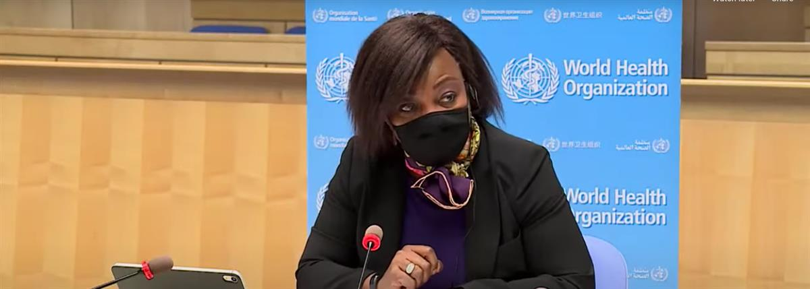
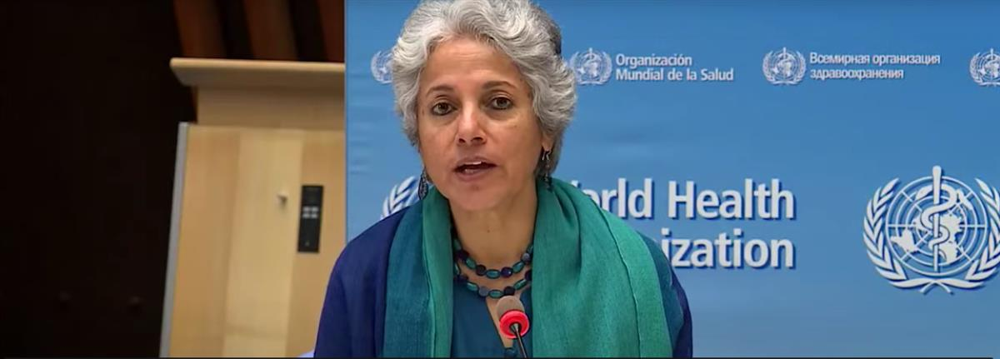
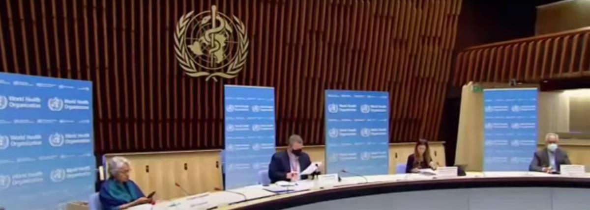
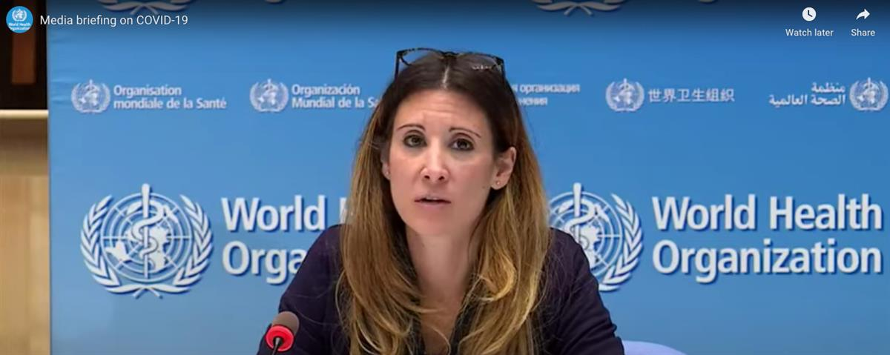

© UNICEF/Fauzan Ijazah Health workers demonstrate proper handwashing to a child at a community health centre in Central Java, Indonesia.
© UNICEF/Fauzan Ijazah Health workers demonstrate proper handwashing to a child at a community health centre in Central Java, Indonesia.
6 November 202
World can save lives and ‘end this pandemic, together’ – WHO chief
As the COVID-19 pandemic continues evolving, the world must “take all opportunities to learn and improve the response as we go”, the UN health agency chief said on Friday.
“Many countries heard our call back in January when we rang our highest alarm by calling a public health emergency of international concern”, Tedros Adhanom Ghebreyesus, Director-General of the World Health Organization (WHO) told a regular press briefing in Geneva.
Since then, he explained that they have been working closely with the UN agency, following parameters set out in its strategic response plan, outlined on 4 February.
“They’ve conducted reviews, shared data and experience and honed their response to their national experience and unique situation on the ground”, Tedros continued, adding that they have also been strengthening their responses by using Error! Hyperlink reference not valid., which harness “a whole-of-society, multi-sectoral approach” at national and sub-national levels.
“Intra-Action Reviews not only help countries improve their COVID-19 response but also contribute towards their long-term health security”, the WHO chief upheld. “To date, 21 countries have completed them, and others are in pipeline”.
‘Never too late’
The best time to look at country’s emergency response capacity is during an emergency, “when you can clearly see what works, what doesn’t and what you need to improve”, he said.
And wherever a country is, he maintained that they can “turn it around with a whole-of-government and whole-of-society response”.
“There’s hope, and now is the time to double down on efforts to tackle this virus” Tedros stressed. “We can save lives and livelihoods and end this pandemic, together”.
Health ministers speak
Having conducted reviews in real-time, the Ministers of Health from Thailand, South Africa and Indonesia, shared their experiences with the WHO chief.
Anutin Charnvirakul explained how Thailand drew on lessons learned from SARS back in 2003 and responded to COVID with a strong public health response led by identifying, isolating, treating cases and tracing and quarantining contacts of those infected.
“We commit to improving our response to COVID-19 by working closely with relevant stakeholders”, he stated.
Meanwhile, Zweli Mkhize gave an overview of the pandemic in South Africa, and how the country utilized the Intra-Action Review, the lessons it had learned and its path forward, which includes new committees at both national and provincial levels to ensure that recommendations being “incorporated into strategic plans” are implemented.
“COVID-19 is still with us and we must remain vigilant and continue to fight together”, he warned.
And Terawan Agus Putranto, Indonesia’s health minister, said their successful response to the pandemic had been built around “coordination, risk communication and community empowerment.”
He also acknowledged that the country needs to improve on its enforcement of “lockdown restrictions and empowering the community, as agents for change”.
SOURCE: UN NEWS



